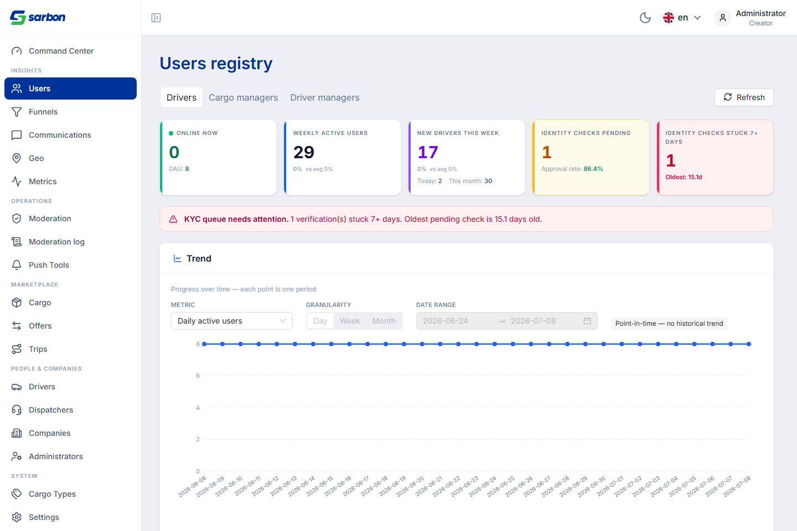
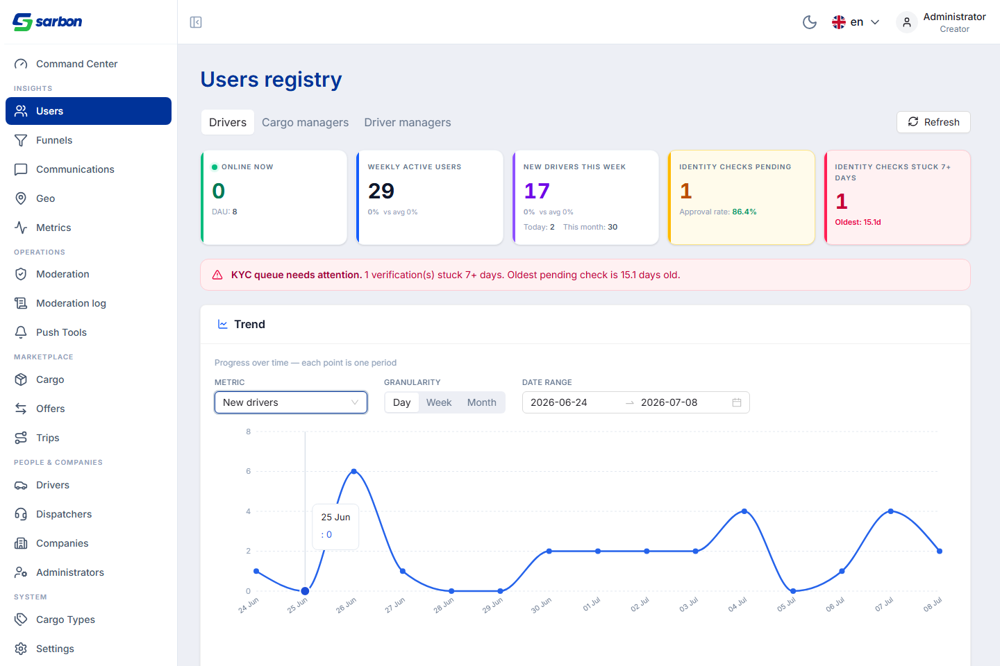
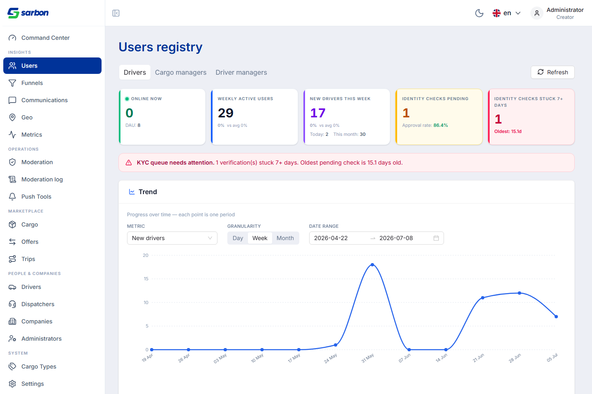
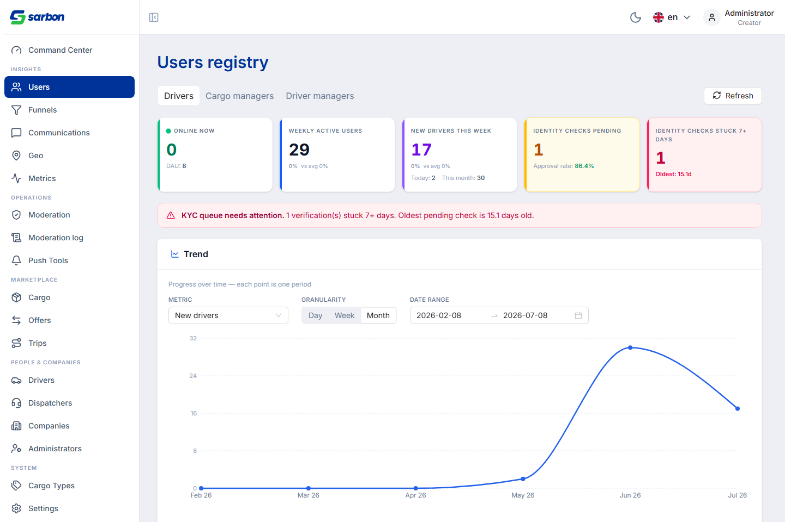
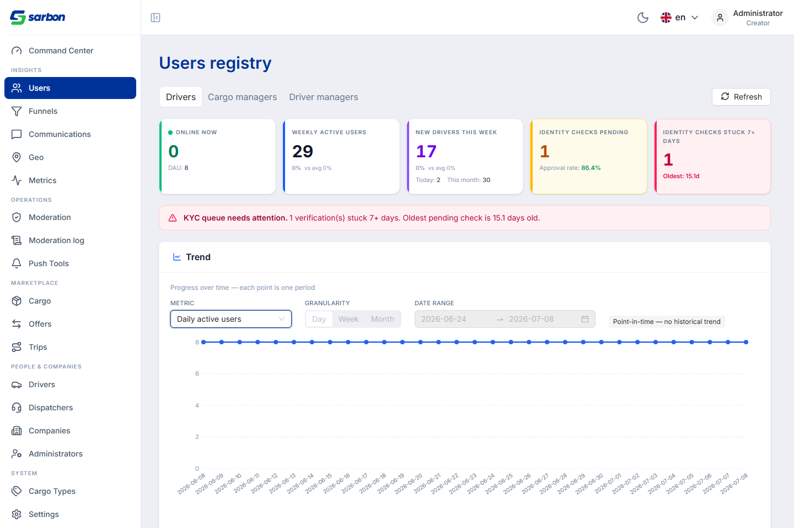
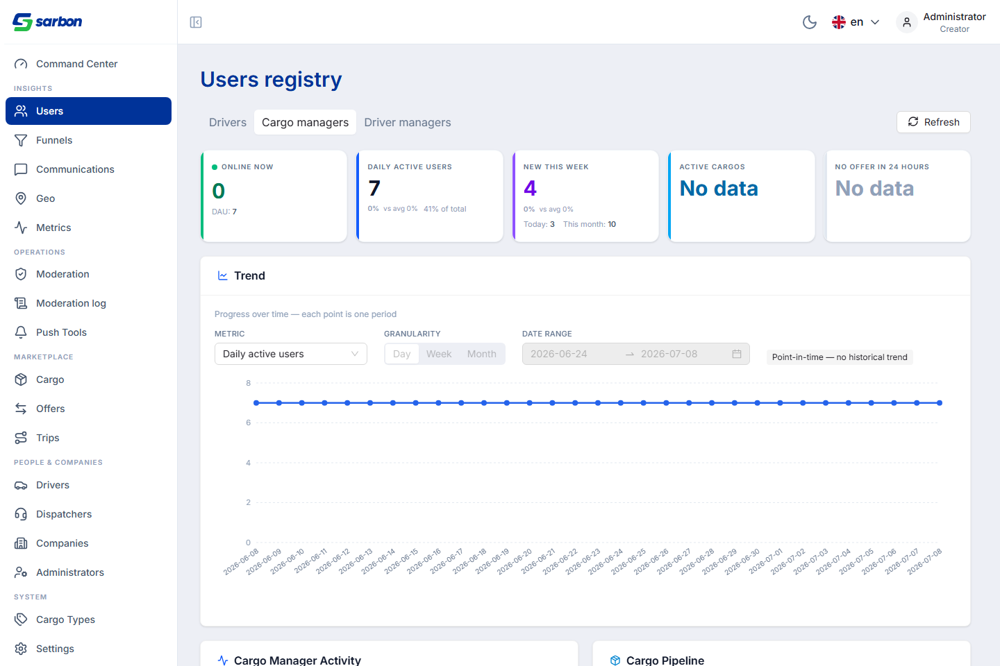
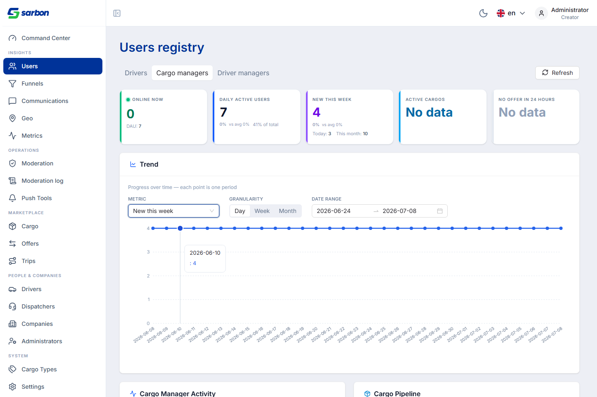
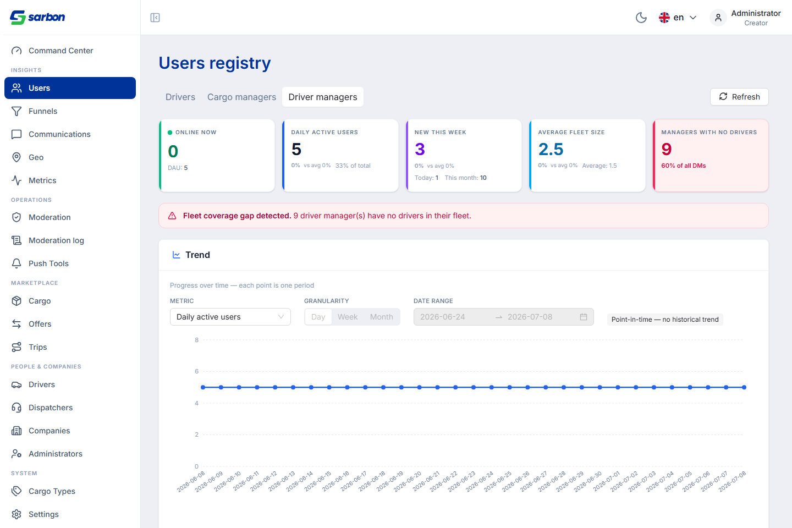
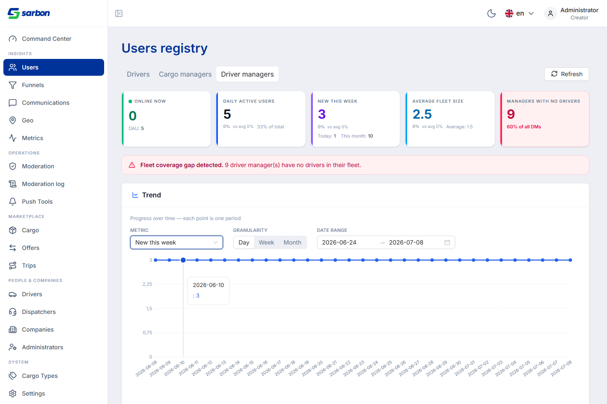

08.07.2026 — фокус на аналитике реестра пользователей в админ-консоли. Экран /admin/users получил секцию Insights с тремя ролевыми вкладками (Drivers · Cargo managers · Driver managers), у каждой — свой набор KPI-карточек и, где уместно, баннер-алерт. Для водителей это «Online now / DAU», «Weekly active users», «New drivers this week», а также контроль качества KYC: «Identity checks pending» (с процентом одобрения) и «Identity checks stuck 7+ days» с баннером «KYC queue needs attention». Для карго-менеджеров — «Active cargos», «No offer in 24 hours». Для менеджеров водителей — «Average fleet size», «Managers with no drivers» с баннером «Fleet coverage gap detected». Под карточками — секция «Trend»: селектор метрики, сегмент гранулярности (День / Неделя / Месяц), диапазон дат и график. Главное инженерное решение дня — не выдавать точечный показатель за временной ряд: DAU честно помечается как снапшот (контролы приглушены, подпись «Point-in-time — no historical trend»), а метрики «Новые …» бакетируются на клиенте в настоящий ряд по дням/неделям/месяцам.
| Область | Что было / причина | Что сделано | Роль / поверхность |
|---|---|---|---|
| Реестр пользователей — ролевые вкладки Insights feature | Показатели по разным типам пользователей были разрознены; не было единого экрана «здоровья» аудитории. | Сегментированный переключатель Drivers / Cargo managers / Driver managers над общим макетом Insights: смена вкладки перезагружает набор KPI-карточек, алертов и источник тренда для выбранной роли. | Админ · /admin/users |
| KPI-карточки водителей + KYC-контроль feature | Не было наглядного контроля очереди проверки личности (KYC) и «протухших» заявок. | Карточки «Online now (DAU)», «Weekly active users», «New drivers this week» (Today / This month), «Identity checks pending» (с approval rate) и «Identity checks stuck 7+ days» (с возрастом старейшей). Красный баннер «KYC queue needs attention» при застрявших проверках. | Админ · вкладка Drivers |
| KPI карго-менеджеров + пустые состояния feature | Нужен срез активности менеджеров грузов и «спящих» позиций. | Карточки «Online now / DAU» (с % от общего), «Daily active users», «New this week», «Active cargos», «No offer in 24 hours»; там, где метрики нет — корректное состояние «No data» вместо нуля/ошибки. | Админ · вкладка Cargo managers |
| KPI менеджеров водителей + алерт покрытия флота feature | Не было видно менеджеров без закреплённых водителей (пробел покрытия). | Карточки «Online now / DAU», «Daily active users», «New this week», «Average fleet size» и «Managers with no drivers» (с долей от всех DM). Красный баннер «Fleet coverage gap detected» с числом менеджеров без флота. | Админ · вкладка Driver managers |
| Секция «Trend» — метрика × гранулярность × диапазон feature | Показатели были только «на сейчас», без динамики во времени. | Блок Trend: селектор метрики, сегмент День / Неделя / Месяц, пикер диапазона дат и линейный график (recharts). Метрики «Новые …» бакетируются на фронте в ряд по периодам. | Админ · все три вкладки |
| Честный снапшот vs временной ряд correctness | Точечную метрику (DAU) легко ошибочно нарисовать «трендом», хотя истории нет — это вводит в заблуждение. | Для снапшот-метрик контролы гранулярности/диапазона приглушаются, рядом — тег «Point-in-time — no historical trend»; график рисует ровную линию текущего значения, а не выдуманную динамику. | Админ · Trend |
День выстроен вокруг одной большой поверхности — аналитики реестра пользователей — от каркаса вкладок до тренда и аккуратных пустых/снапшот-состояний.
Все скриншоты — реальные, сняты Playwright/Chromium против живого бэкенда с входом под администратором. Скрипты захвата — capture-trend.cjs и recapture-managers.cjs в папке отчёта.









| Артефакт | Путь |
|---|---|
| Секция Insights реестра пользователей (админ) | src/pages/admin/users/* (Insights / Trend, ролевые вкладки, KPI-карточки, алерты) |
| Краткая сводка для PM (Excel) | daily-report/08.07.26/report-08.07.26.xlsx |
| Скриншоты (живые, авторизованные) | daily-report/08.07.26/img/ (01…09) |
| Скрипты захвата | daily-report/08.07.26/capture-trend.cjs · recapture-managers.cjs |
| Следующий рабочий день (тренд линия → столбцы) | daily-report/09.07.26/ |
При сверке git-диффа дня с отчётом обнаружены изменённые области, которые не были задокументированы. Добавлены ниже (текстовая доработка отчёта, без скриншотов).
Полный дифф дня — 103 файлов.
| Область | Значимость | Файлы / коммит |
|---|---|---|
| Привязка email как вторичного идентификатора (профиль: связать+подтвердить email, вход email+пароль) | КРУПНОЕ | LoginPage.tsx, authEmail.ts (+test), EmailChangeSection.tsx (new 207), ProfileSidebarCard.tsx, userTypes.ts (email/email_verified) |
| Переписан экран AI-создания груза (paste-box, раскладка, драфт) | КРУПНОЕ | CargoAiCreatePage.tsx (172), CargoAiCoreFields.tsx (279), CargoAiMoreDetails.tsx (251), cargoAiParseMapper.ts (+test), resetCargoAiForm.ts (new) |
| Переработка страницы driver-managers (колонки, drawer, mobile-card, presentation/helpers) | КРУПНОЕ | DriverManagersPage.tsx, DriverManagerDetailsDrawer.tsx (96), DriverManagerMobileCard.tsx (72), driverManagerPresentation.tsx (136), useDriverManagerColumns.tsx (128) |
| Контрол уменьшения числа ТС на грузе (новая фича на детали груза) | КРУПНОЕ | CargoVehiclesDecreaseControl.tsx (new 207), cargoVehiclesDecrease.ts (+test), MyCargoDetailPage.tsx, MyCargosActionBar.tsx |
| Панели модерации: модалка деталей водителя + переработка паспортной панели | КРУПНОЕ | DriverModerationDetailModal.tsx (new 239), PassportModerationPanel.tsx (+264), ManagerModerationPanel.tsx (+108), dispatcherModeration.ts |
| Переработка конфига темы AntD | КРУПНОЕ | AntdProvider.tsx (+90), antdThemeConfig.ts (new 91) + buildAntdThemeConfig.test.ts |
| Загрузка фото водителя в админке (авторизованные картинки) + мелкие правки Drivers/оплаты груза | мелкое | AdminAuthedImage.tsx (new), useAdminAuthedPhoto.ts (new), cargoPaymentDefaults.ts (new), Step2Route/Step4Payment изменения |